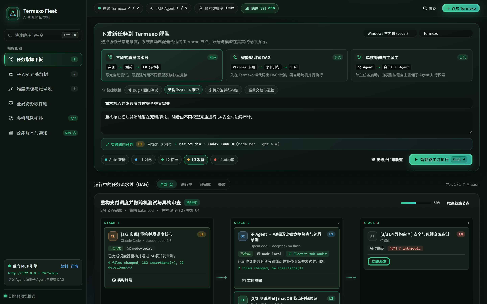
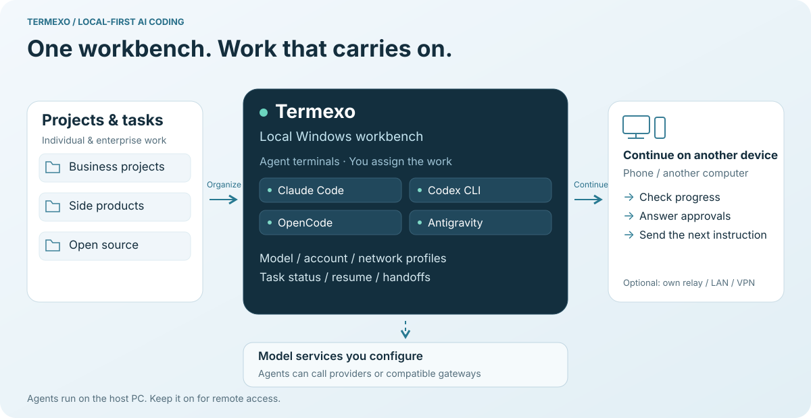
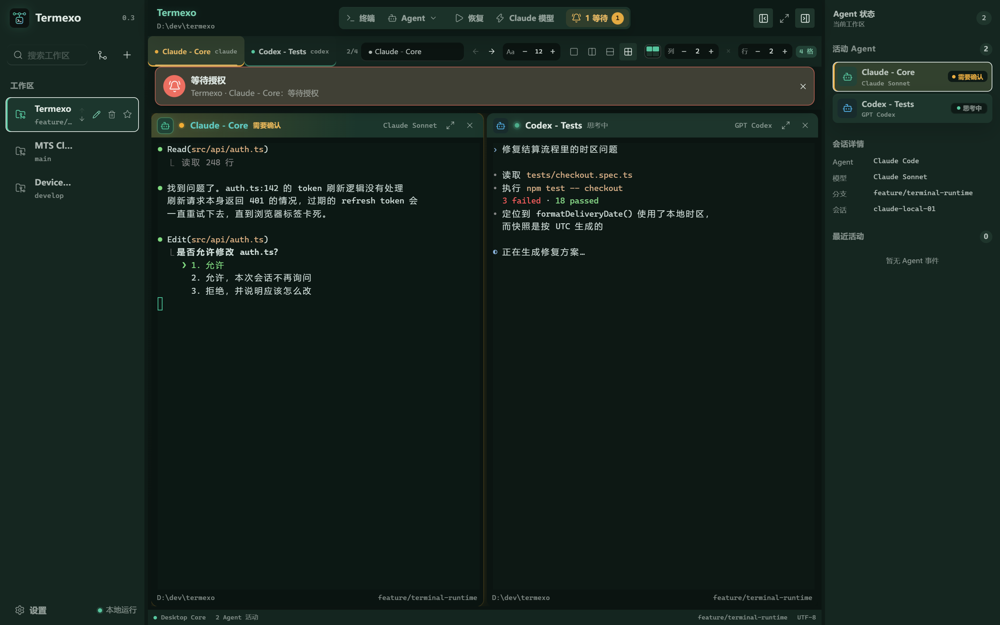
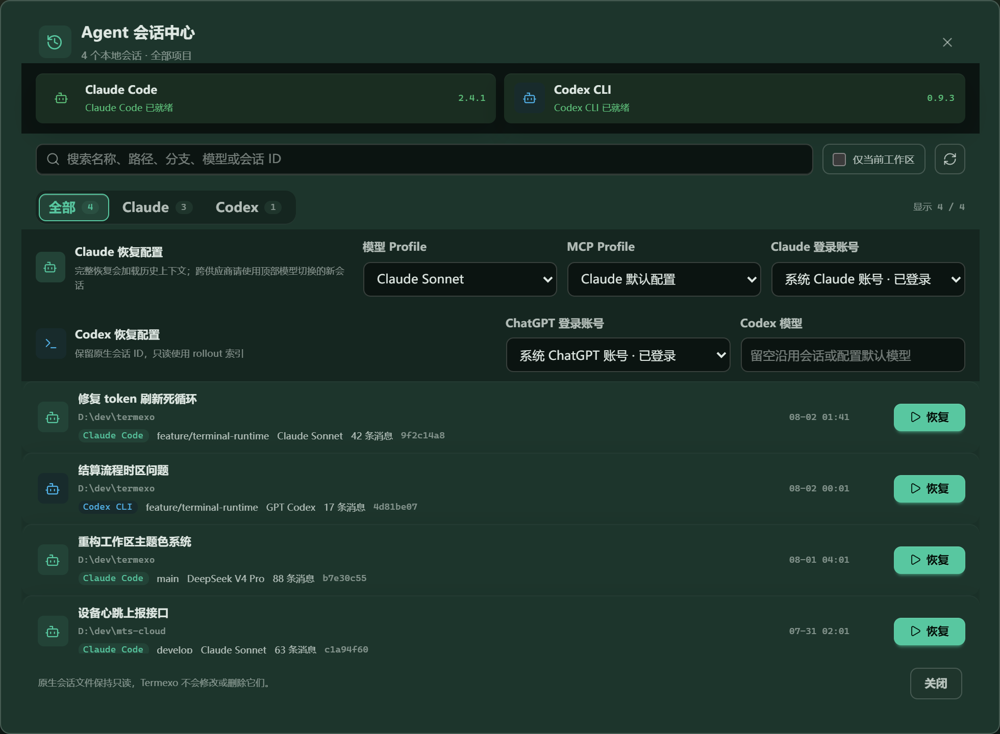
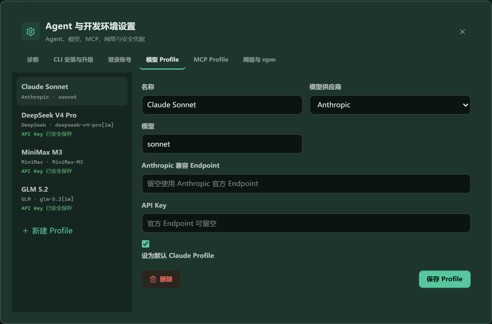
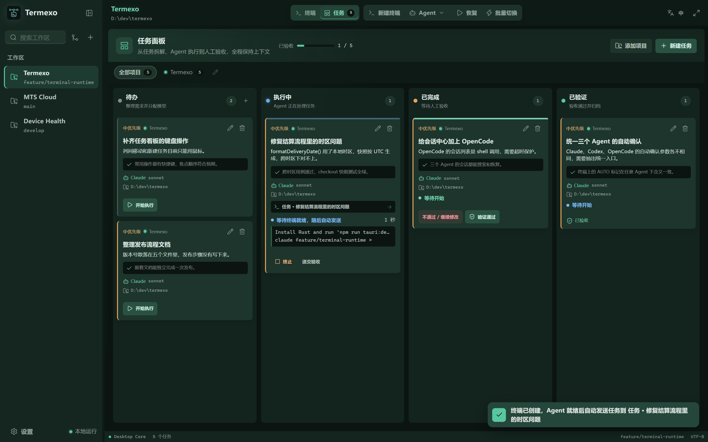
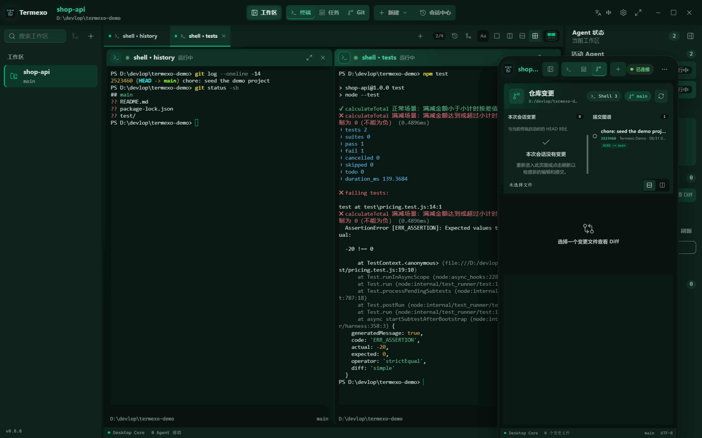

Use Termexo MCP to list my workspaces and terminals, and tell me which are running. Do not change anything yet.
Local-first AI workspace
Your AI agents. One workbench.
Run coding agents side by side. With Termexo MCP, a connected AI can send instructions to your terminals and read their real output.
npx termexo@latest
- Claude Code
- Codex CLI
- OpenCode
- Antigravity
- Grok Build
-
 Pi Agent
Pi Agent
MCP / AGENTS IN CONTROL
From prompt to output.
Pick a step to see how a connected AI finds a terminal through Termexo MCP, sends an instruction and reads what the agent returns.
OpenCode demo-web
MCP :7421
terminal_list
Find the OpenCode terminal in this workspace.
✓ demo-web / OpenCode found running · terminal: opencode-1
Set up MCP on your computer
-
Prepare your workspace
Open Termexo and a project. Make sure your agent CLI is installed and signed in, and keep Termexo running.
-
Enable the connection
In Settings → AI Control (MCP), enable the local service and automatic connection, choose permissions and Apply. Once the service shows Running, start or restart your agent in Termexo.
-
Check it with one sentence
Paste the read-only check below into your connected agent. A real tool call returning your workspaces and terminals confirms the connection.
Use Termexo MCP to find the running OpenCode terminal in my current workspace, send hi, submit Enter and read its reply. If several terminals match, list their names and let me choose.
WORKBENCH
See which agent needs you.
Run supported coding agents in real terminals. Their states stay visible across projects, so you can find the one waiting for your input and return to a native session later.
Antigravity · Two real sessions
30-second real recording · v0.10.6
Every session stays alive in a tab. Show the ones you are watching right now.
Anything from 1 to 6 rows and columns. Each project remembers its own layout.
Same Claude Code you already know, pointed at a different provider.
Your workbench runs on your PC. Remote access is optional, through a relay you manage or a trusted LAN / VPN.
ECOSYSTEM / TERMEXO FLEET · PREVIEW V0.1
Run agents across machines.
Termexo Fleet is the companion desktop commander built on Termexo MCP. Grade tasks across L1–L4 difficulty tiers, route accounts & models automatically, let parent agents spawn worktree-isolated sub-agents, and track savings across multiple Termexo machines — with zero black-box execution.
Termexo Fleet product tour
45 seconds

Difficulty-aware routing & failover
Send quick edits to low-cost L1 slots, reserve L3 for hard architecture work, and enforce L4 cross-family reviews. Auto-cool failing slots on 429/402/422 and escalate on retry.
Autonomous sub-agents with guardrails
Built-in reverse MCP lets parent agents submit DAG plans and spawn child agents in isolated Git Worktrees — bounded by depth, concurrency, and budget caps.
Multi-machine fleet topology
Connect Windows, macOS, and Linux Termexo nodes over local, private LAN, or Tailscale VPN with live RTT/capability probes and tag-affinity routing.
Execution ledger & notifications
Track success rates, escalations, and estimated savings vs. an all-L3 baseline. Push completion and approval alerts to Feishu, WeCom, Slack, or Termexo WeChat.
DIRECTION / USE CASES
Keep your AI development work connected.
Multiple projects and coding agents can mean scattered windows, missed approvals, and context to explain all over again. Termexo brings the work into view and helps you pick up where you left off.

More projects. Less switching.
-
Work, side projects, open source
Keep each project's terminals, models, and layout together. Assign agents to implementation, tests, and review, then see who needs you.
-
Continue tomorrow, or with another agent
Find a saved native session or prepare a handoff with the goal, progress, and next step. Spend less time repeating the background.
-
Step away without losing touch
Leave your PC running and reconnect from your phone to check output, answer an approval, or send the next instruction.
Organize the work. Keep control.
-
Project work engineers can follow
Group business projects into workspaces. Engineers use the task board and agent status to assign work, review results, and prepare handoffs.
-
Providers and environments in one place
Manage model, account, and network profiles for different providers and compatible gateways, with quota visibility where supported.
-
Access to the development PC you manage
Run the workbench on your organization's Windows, Mac or Linux computer. Use your own relay or trusted LAN / VPN to reconnect to long-running tasks.
02 / NEVER MISS ONE
It tells you when an agent is stuck.
Keep approval, input and completion notices visible across projects with persistent banners and native system notifications. On Windows, the taskbar also flashes until the notice is handled.
- Waiting for approval, waiting for input, and finished all look different at a glance
- Keep pending notices in view while you work in other terminals
- Click the banner to jump straight to that terminal


03 / NOTHING IS LOST
Pick up yesterday's conversation.
Search saved Claude Code, Codex, OpenCode, Pi Agent, Grok Build, and Antigravity sessions across projects. Termexo uses each CLI's own resume command to reopen the native context, without changing session files.
- Search across every project by name, path, branch, or model
- Resumes through each supported CLI's native command
- Your session files are read-only — Termexo never edits or deletes them
04 / MODEL ROUTING
Same CLI. Different model.
Keep using Claude Code, but point it at DeepSeek, MiniMax, GLM, or your own compatible gateway. Save each one as a profile and switch between them in two clicks — no reinstalling, no editing config files by hand.
- Anthropic, DeepSeek, MiniMax, GLM, or any compatible endpoint
- API keys go into Windows Credential Manager, macOS Keychain or Linux Secret Service
- Switch every Claude terminal in a project at once


05 / TASK BOARD
Hand the work to an agent.
Write down what needs doing and what counts as done, pick the agent and the project, and the task opens as a real terminal. It reports its own progress back to the board, so you can see what is running without reading every terminal at once.
- Todo, executing, completed, verified — the terminal moves the card
- Send a task to Claude Code, Codex, OpenCode, Pi Agent, or Grok Build
- Reject a result with a note and it goes back for another round
06 / ANY DEVICE
Your workbench. Across networks.
Your desktop opens an outbound tunnel to your relay. Open the relay link on a phone, tablet, or another computer to check output and continue the same terminal session. The desktop needs no public IP or router port forwarding.
- Self-host termexo-relay; enroll your desktop with a code or relay account
- Use an HTTPS browser entry point; v2 session frames are encrypted with AES-256-GCM
- Keep your desktop on and Termexo connected; relay login and the desktop access token are separate checks
Desktop app: Windows x64, macOS Apple Silicon / Intel and Linux x64. Relay: Linux / macOS / Windows, x64 / arm64 and containers. Read-only links let others view without sending terminal input.

07 / FEATURES
The things you keep doing by hand.
Most of the friction with coding agents is not the model. It is remembering which terminal was doing what, and setting it all up again tomorrow.
Preview content beside your terminals
Open several file, image or website previews in their own tabs. Resize the panel and highlight code while preserving every line and space. Agents can open previews through MCP.
Save and review project actions
Discover actions without switching away to start an Agent. Select all, edit entries and remove duplicates before confirming from the same window.
Pause third-party notifications
A toolbar switch controls configured channels. Messages include time and session context; desktop WeChat notifications are available on Windows.
One command, three platforms
Choose Windows EXE/MSI, a Mac DMG for Apple Silicon or Intel, or the Linux x64 .deb. The npm package contains all four builds and starts the matching application locally.
Close it. Reopen it. Still there.
Project folder, grid layout, terminals, and colours come back with the workspace. Drag workspace rows to put projects in your preferred order.
Nothing you close is lost
Find past Claude Code, Codex, OpenCode, Pi Agent, Grok Build, or Antigravity sessions across your projects and reopen their native history.
claude --resume · codex resume · opencode --session
Hand a task to an agent
Write down the task and what counts as done, pick an agent, and it opens as a real terminal that reports its own progress back to the board.
Try a cheaper model on the same task
Point the same CLI at a different provider, switch back if the result is worse, and keep every key in secure storage.
Claude CoreRUNNING
Claude ReviewWAITING APPROVAL
Codex TestsTHINKING
Know the moment it needs you
Waiting, thinking, needs approval, done, failed: visible across projects, with system notifications and Windows taskbar attention.
Works in your language
Follow your system language or switch between Chinese, English, Spanish, French, German, Japanese and Korean at any time.
See your quota before you burn it
Check supported providers' reported quota and reset time. Grok Build shows an exhausted free allowance; unavailable percentages stay unavailable.
Reach your workbench across networks
A self-hosted relay connects your phone to the same desktop terminals. No public IP or router port forwarding on the desktop.
Let one agent operate another
Connect through local MCP to send instructions to existing terminals for all six supported agents and read their output. Manage tasks or permitted settings too; choose access scopes yourself.
Set up MCP →
08 / ROADMAP
Release milestones.
See how the workbench developed, or open GitHub for the latest release notes.
Browse earlier milestones
V0.3SHIPPED
Run several agents side by side
Claude and Codex detection, separate logins, resume, custom grids, model profiles, seven interface languages, and everything saved locally.
V0.4SHIPPED
Accounts, installs, and networks
Install or upgrade the CLIs in one click, keep several logins apart, set up proxies for a company network, and watch how much plan quota is left.
V0.5–0.6SHIPPED
Handing work between agents
Session summaries, moving a task from one agent to another, routing work, and notifications.
V0.10.0–0.10.1SHIPPED
Remote relay access
Shipped in v0.10.0: self-hosted relay access, code or account enrollment, cascaded addresses, and v2 encrypted sessions. Your browser operates the terminals already running on your desktop.
V0.10.9SHIPPED
See every agent's status
Compact workspace icons show each agent's state and current window name. Confirm completed work in its terminal, with the selected terminal's branch checked against Git.
V0.10.10SHIPPED
Local MCP control, connected automatically
19 tools for terminals, tasks and settings. Enable the server, select permissions, then launch Claude Code, Codex, OpenCode, Grok Build or Antigravity. Restart existing Agents to connect.
V0.10.11SHIPPED
Reliable status and easier setup
Codex resume and completion fixes, Grok and Antigravity launch repairs, agent-specific mobile shortcuts, and clearer remote-access and MCP setup.
V0.10.12SHIPPED
Responsive terminals and Codex mobile shortcuts
Keep desktop input and scrolling responsive while reconnecting from a phone, paste clipboard text reliably on Windows, and edit queued Codex input with ⇧←.
V0.10.13SHIPPED
Cleaner proxy, titles and tab states
Single-casing proxy on Windows for every terminal, session scans on older OpenCode CLIs, instruction-free Codex titles, and completed tabs set apart from the selected one.
V0.10.14SHIPPED
Easier Agent setup and Pi support
Install and update six Agents with clear guidance, use the official Antigravity updater, and keep pending reminders flashing until acknowledged.
V0.10.15SHIPPED
Organized projects and clearer account setup
Workspace folders, tags and icons, account login choices, model discovery and upgrade suggestions, and confirmation before closing active Agent terminals.
V0.11.0SHIPPED
macOS, content previews and smoother saved actions
v0.11.0 adds Apple Silicon and Intel packages, multiple preview tabs with code highlighting, a continuous saved-action review and third-party notification controls. GitHub Actions builds desktop installers and publishes the Windows/macOS npm package.
V0.12.1SHIPPED
Linux, read-only access and a smaller desktop app
v0.12.1 includes Linux desktop and npm support, read-only remote links, command environments and mobile input improvements. The built-in One Ring engine and its runtime have been removed; public MCP tools and ordinary Agent terminals remain.
09 / PRIVACY
Your work. On your computer.
Termexo runs locally by default. Enable remote access when you need it: use your own relay or a trusted LAN / VPN, control the desktop access token, and disconnect from Settings. Your agent CLIs still connect to the model services you configure.
Local by default
Your project paths, sessions, terminal state, and settings sit in a file on your disk. There is no cloud service to sign into.
Your API keys are not in a config file
API keys go into Windows Credential Manager, macOS Keychain or Linux Secret Service. The app stores a reference; the interface can tell you a key exists without returning its plaintext.
Your agent files are read-only
Termexo reads what Claude Code and Codex write, and uses their own resume commands. It never rewrites, renames, or deletes your session history.
BUILD WITH US
One command. No account.
The npm package includes Windows x64, complete macOS apps for Apple Silicon and Intel, and Linux x64. With Node.js 18.18+, the same command starts the matching app locally, without a Termexo account.
Windows packages are unsigned. Mac builds use ad-hoc signing and are not notarized. Linux needs a graphical desktop and GTK / WebKitGTK libraries; see the user guide for setup.
Built in the open, under the MIT license. If Termexo helps your workflow, a GitHub Star helps others discover it. Bug reports and contributions are welcome too.